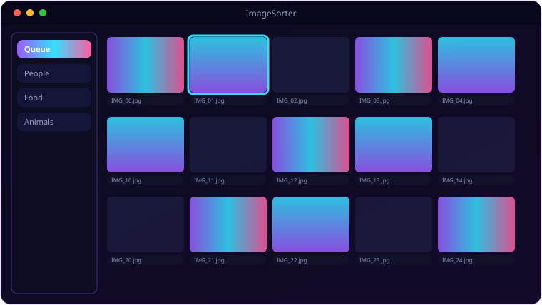

A look inside ImageSorter.

Everything ImageSorter brings to the table.
Claude Vision Sorting
Each image is analysed by Claude and assigned a category automatically — resized to 1024px first to keep it fast and cheap.
Browser + Queue
A folder tree on the left and an image queue with thumbnails on the right; recursive scanning and multi-select.
Custom Categories
Manage your own category list, with presets — and a manual review dialog whenever Claude returns “Other”.
Copies, Never Moves
Sorted images are copied into Library B/<Category> (configurable), leaving your originals untouched.
Quick Navigation
One-tap jumps to Desktop, Pictures and Downloads to get sorting fast.
Settings
Masked API-key field, destination folder and which file extensions to include.
System requirements.
Minimum
- OS: Windows 10 (64-bit) or Windows 11
- CPU: Dual-core, 2.0 GHz
- Memory: 4 GB RAM
- Graphics: Any DirectX 11 / integrated GPU
- Storage: 250 MB + space for your files
- Display: 1280×768 or higher
Recommended
- OS: Windows 11 (64-bit)
- CPU: Quad-core, 3.0 GHz
- Memory: 8 GB RAM
- Graphics: Dedicated GPU (optional)
- Storage: SSD with a few GB free
- Display: 1920×1080 or higher
Requires an Anthropic API key (entered in Settings). A steady internet connection is needed for vision analysis.
The details.
| Model | Claude (claude-sonnet-4-6) vision |
| Default categories | People, Landscape, Food, Animals, Documents, Screenshots, Other |
| Output | Copies into C:/Library B/ |
| Requires | Anthropic API key (entered in Settings) |
| Platform | Windows 10 / 11 |
Get ImageSorter.
Claude vision sorts your images into tidy category folders.
⬇ Download ImageSorterImageSorter_Setup.exe · free · Windows 10/11 · API key required